Historia
En la serie Steven Universe, creada por Rebecca Sugar, Garnet aparece como una figura imponente,
silenciosa y segura de sí misma. Desde el principio se presenta como la líder natural de las Gemas de Cristal,
siempre firme, siempre equilibrada. Pero su historia es mucho más profunda que su fuerza.
Garnet no nació como una sola gema. Es el resultado del amor entre dos seres muy
distintos: Ruby, una soldado impulsiva y apasionada, y Sapphire, una aristócrata capaz de ver el futuro.
En su mundo natal, las gemas vivían bajo reglas estrictas que prohibían la fusión entre diferentes tipos. Ruby y Sapphire
estaban destinadas a ocupar lugares separados en una sociedad jerárquica.
Sin embargo, cuando Ruby salvó a Sapphire de un destino injusto, algo cambió. En medio del caos y la persecución,
se fusionaron por primera vez. Aquella fusión no fue una estrategia de combate, sino una elección. Así nació Garnet,
no como un accidente, sino como una decisión consciente de permanecer juntas. Lo que comenzó como un acto de rebelión se convirtió
en una identidad propia.
En la Tierra, encontraron aceptación junto a Rose Quartz y Pearl. Allí, Garnet dejó de ser un error del sistema para convertirse
en símbolo de libertad. Con el tiempo, su estabilidad emocional y su capacidad de ver múltiples futuros posibles
la transformaron en la guía del equipo. Tras la ausencia de Rose, asumió el liderazgo con serenidad,
tomando decisiones difíciles con una mezcla de lógica y compasión.
Su relación con Steven Universe es especialmente significativa. Más que una guerrera, Garnet es para él un ejemplo de identidad elegida.
Le enseña que el amor no es debilidad, que el futuro no está completamente escrito y que ser uno mismo es un acto de valentía.
Garnet representa la unión constante. No es simplemente la suma de Ruby y Sapphire;
es el resultado del diálogo, la confianza y el compromiso diario entre ambas. Su fuerza no proviene
solo de sus poderosos guantes ni de su visión del futuro, sino de la decisión continua de amarse.
En un universo marcado por jerarquías rígidas, Garnet existe como prueba de que el amor puede romper cualquier
estructura y crear algo nuevo, estable y profundamente auténtico.
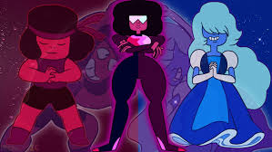
Informacion
caracterizticas y habilidades
- Visión del futuro:
Puede ver múltiples posibles futuros y calcular probabilidades (habilidad heredada de Sapphire).
- Fusión estable permanente:
Es una fusión constante de Ruby y Sapphire sin perder estabilidad.
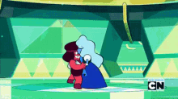
- Invocación de armas:
Puede materializar sus poderosos guantes gigantes para el combate.
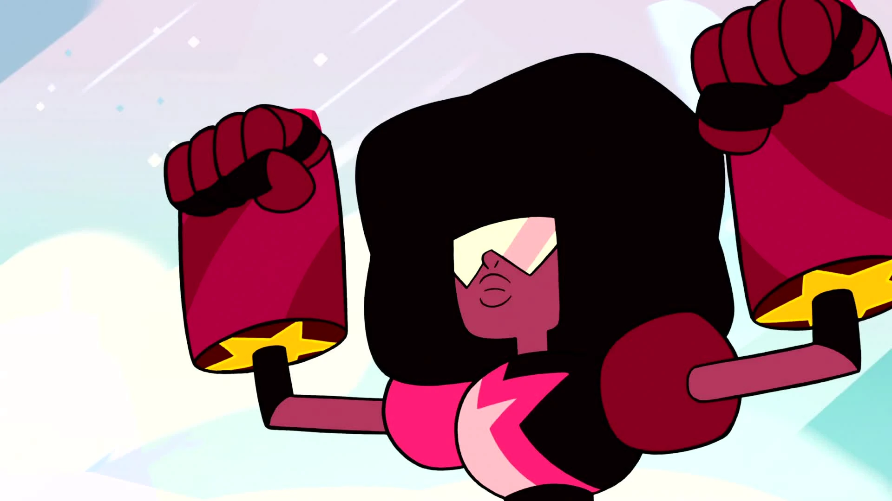
- Resistencia extrema:
Soporta grandes daños físicos sin desestabilizarse fácilmente.
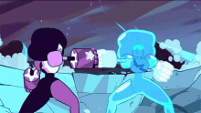
- Estratega experta:
Toma decisiones basadas en probabilidades futuras.
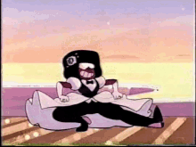
Top 3 mejores momentos
- “Stronger Than You” (Temporada 1 – Jailbreak)
Cuando se revela que Garnet es una fusión permanente de Ruby y Sapphire, y canta Stronger Than You
mientras pelea contra Jasper.
🔥 Es el momento que redefine la serie: amor, identidad y fuerza emocional convertidos en poder literal.

- La boda de Ruby y Sapphire (Temporada 5 – “Reunited”)
Garnet se separa para que Ruby y Sapphire puedan casarse, en una de las escenas más importantes de la
animación moderna.
💍 La boda es interrumpida por el ataque de las Diamantes, pero el momento queda grabado como un
símbolo de representación y amor genuino.
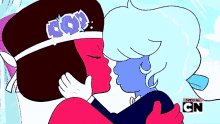
- Garnet como mentora de Steven
A lo largo de la serie, especialmente en episodios donde guía a Steven Universe, Garnet muestra su lado
más sabio y protector.
👁️ Con su “visión futura”, le enseña a Steven sobre decisiones, responsabilidad y crecimiento emocional
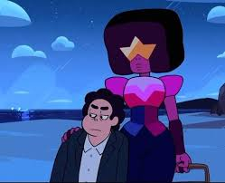
Ficha tecnica
| Edad | Peso | Estatura | Primera aparicion | Debilidades | Alias |
|---|---|---|---|---|---|
| 5,752 años | desconocido | 1.90 – 2.00 metros (estimado) | Episodio 1: “Gem Glow” (Temporada 1, 2013). | Inestabilidad emocional entre Ruby y Sapphire puede causar que se separen. |
Líder de las Crystal Gems |
Registro de fans
Galeria
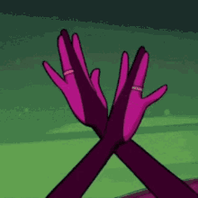
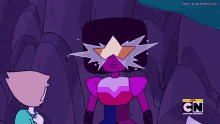
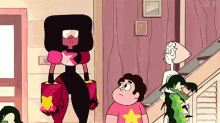
.gif)
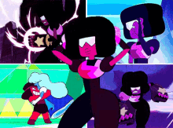
.gif)
.gif)
.gif)
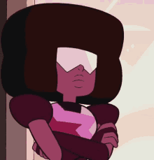